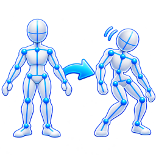

Bring generated motion, video mocap, or existing clips into one graph. Organize takes, prepare the character rig, and reuse the same scene for a single preview or a collection of renders.
PriorMDM / video mocap / BVH files → Mocap Collection Collection → For Each → Anim Retarget → Scene → Render → For Each End
Add PriorMDM and run Setup PriorMDM. Confirm its model, normalization data, inference Python, and output folders; use Advanced paths for an existing installation.
Describe one character's motion. Set duration, seed, guidance, and device, then choose Generate. The base motion controls use a 20 FPS time scale and support durations up to 9.8 seconds.
Choose Create MocapBVH for a connected BVH preview, or Add to Collection to append the completed result to connected collections or create one.
Use Create T-pose BVH or Create A-pose BVH to create a separate single-frame reference from the last generated skeleton.
Generated BVH uses reconstructed rotations for skeleton preview and blocking. Review and retarget each take before treating it as finished character animation.
Existing motion or video
Mocap Import loads and validates BVH. FBX Animation loads a skeletal FBX clip. Both provide a way to inspect the motion before using it downstream.
GEN-X VideoMocap uses the separate GEM-X runtime to extract motion from video and can create a downstream BVH import. Prepare that runtime using Mocap\setup.bat.
Choose the source that fits the task, then bring the result into the same collection, retargeting, scene, and review tools.
Optional hand articulation
PriorMDM exposes Setup HandMDM and Animate Hands. Configure the hand side, gesture description, time window, and blend duration. The gesture plays, holds, then blends out. This is a preview pipeline: precise palm orientation and character hand retargeting still need refinement.
Preview the rig before a run
Use Preview Rig and its collision/limit display options to inspect the skeleton. Select joints to edit bend cones and twist ranges; multi-joint controls help adjust several joints together. Save the rig settings to reuse the adjustments.
Each selected joint also exposes Capsule radius controls for its Start end and Far end, expressed in the input rig's units. The two radii form a tapered collision volume. Hand guides include palms and finger segments, with bend limits and spread controls where supported. Capsules can be picked directly in the viewport.
Both Preview Rig and Rig Limiter include foot capsules running from each ankle to the foot joint. Select the ankle or its capsule to adjust the two radii. These volumes follow animation poses and participate in manual collision blocking and IK repair.
Collision preview (blocks rotations) shows the volumes and stops manual joint rotations at contact. Turn it off to pose without that collision blocking. The Save button stores Preview Rig limits and capsule radii in application settings; the same panel in Rig Limiter saves that node's settings with the workflow.
Inspect constraints in contextRig guides, motion collections, and render workflows share the graph and viewport.
2. Organize takes in Mocap Collection
Mocap Collection keeps BVH paths, their active output, and review tools together.
Load BVH files / Load BVH folder: add individual clips or recursively scan a folder. Existing paths are skipped.
Use checkboxes / Checked only: choose which takes participate in the output list. The output control selects the active take; Live view previews changes.
Update paths: select rows and locate their BVH files under a new parent folder after moving a collection.
Load renders / Review renders: associate rendered results with the source takes and compare them visually.
Rename / Archive: manage the active or selected BVH run folders and their assigned render folders. These actions operate on folders on disk.
Row selection and Use checkboxes have different roles: select rows for management actions; check files to control the eligible output or batch list.
3. Prepare the character and constraints
Repair existing takes with Rig Limiter
Rig Limiter processes an existing animation; it does not need another motion-generation run. Connect a compatible Mocap Import or Mocap Collection to its animation input. Its animation output can feed Animation Correction, Anim Retarget, Animation Blend, Transforms, or Scene.
Use a PriorMDM/HumanML skeleton with its original joint hierarchy and rest axes. Apply Rig Limiter before retargeting: it requires fixed bone lengths and unscaled bone transforms. Supported hand joints are included when present.
Choose Repair to calculate a corrected clip, then Preview to inspect it. Preview opens the available animation without running a repair. Select body or finger joints, adjust bend/twist or spread limits and capsule radii, and save the node's settings. Click Repair again to apply changes.
Enable Correct capsule intersections and IK repair to correct contact as well as angular limits. Repair tries finger adjustments before moving the arm. With IK repair off, only bend/twist limits are applied. Root motion, clip timing, and bone lengths are preserved.
Read the summary for corrected frames, finger capsule count, frames adjusted by arm IK, and frames with remaining capsule overlap. Contact that cannot be resolved within the joint limits remains reported for review.
Choose Export corrected BVH for the active take. For a batch, connect Mocap Collection directly, check the desired takes, and use Export checked collection. Both actions write uniquely named _limited_ BVHs in the chosen folder and leave the source files and collection entries intact.
Saving capsule radii, limits, collision options, or the workflow does not run a repair. Repair turns red when the input or saved settings need recalculation. For a connected BVH import or collection, the button checks for a matching saved repair in the background when the selected path or settings change; opening Preview is not required to update its state. Matching repairs can be reused after reopening the workflow, including compatible repairs saved by earlier versions. When settings change, the last repair for the same input remains visible until you repair again; without a matching result, the source animation is shown. Successful repair clears the red indicator; cancellation keeps the last result and pending state.
Export corrected BVH requires an up-to-date Repair result. Export checked collection is an explicit batch operation that repairs and writes the checked takes using the saved settings.
Export preserves the skeleton hierarchy, root motion, timing, and BVH End Sites used for fingertip segments. Repair runs with progress and cancellation controls; already completed files remain available if a collection export is interrupted. Use Reset limits and volumes to restore defaults, then run Repair again.
Capsules approximate the body and fingers. A lower overlap count is useful feedback, but inspect the character mesh after retargeting before rendering or using it as a cloth collider.
Repairs use fast mode by default. Enable Thorough repair (slower) for more work on between-frame contacts; both modes report unresolved contacts. Progress includes solving and saving the corrected BVH. Stop, Escape, or closing the progress dialog requests cancellation.

Edit individual takes with Animation Correction
Animation Correction adds joint position and rotation keys and body or limb IK ranges to an animated BVH or FBX take. Connect a source clip, Mocap Collection, or Rig Limiter to its animation input. Finish automatic repair before editing that result.
Choose Preview / edit animation. Scrub the timeline and select a joint in the viewport or joint hierarchy. The ? button in the correction panel opens editing hints, including where to enable joint names.
Enable IK Controls to pose pelvis, chest, wrist, or ankle controls. Dragging previews a pose without adding keys. Use Start IK and End IK to bound an overwrite; S and E appear above the boundary triangles, with yellow filling between them. Use Set key inside a range to add an intermediate IK pose.
Select Px, Py, or Pz on the timeline before Start IK to limit the target coordinates. End IK retains that range's channel selection. Separate position axes can have overlapping ranges and shared boundary frames: a pelvis Py range can contain independent Px and Pz ranges. A position-only range keeps the control's incoming orientation animated; clear the channel selection for full IK keying, including chain rotations.
Turn IK Controls off to key a joint's local position or rotation directly. Select the required position or rotation channels before Set key; only those channels are keyed. With no channels selected, all six are available. Use Show colliders and Show limits to inspect supported rig guides.
Keyframe actions save a draft beside the input as .bvh.animation_correction.json or .fbx.animation_correction.json. Use Save draft before changing previews or rebuilding Scene. Undo and redo restore edits, with each viewport drag treated as one step. Changing the base animation can invalidate a saved draft.
Choose Approve & export BVH to save the draft and write a uniquely named _corrected_ BVH beside the source. The original file is preserved.
To extend an overwrite across a gap, select its left End and the next Start on the same control and channels, then click Join IK ranges (the Fuse icon between Start IK and End IK). The same action is available from the key context menu or Ctrl+J. Complete the right range's End first. Both selected poses keep their timing and become intermediate IK keys; the outer S and E bound the extended yellow area. Deleting an outer boundary promotes the next remaining IK key when available; if only one pose remains, the bounded overwrite is removed and that pose becomes an ordinary key.
Reload restores the input animation for the selected joint. Select timeline channels to restore just those axes across the take, including their IK and regular edits. With no joint selected, Reload all restores the entire input take. Reload saves the reset to the draft immediately; use Undo to recover it in the current session.
Move the blue pole controls to steer elbow or knee bends; directly rotating a joint in FK does not reposition its IK pole. For curve framing, navigation, and tangent controls, see the timeline curve editor. The timeline can be expanded or detached while editing.
Connect the saved animation output directly to Scene to view the corrected skeleton. Scene also accepts Rig Limiter output directly. Use Anim Retarget before Scene when you need the motion applied to a character mesh.
Retarget and assemble the character
Use Anim Retarget to map source BVH/FBX motion to a target FBX character. Validate the imported rest geometry, capture pose, and animation roles, then inspect joint mapping, root controls, offsets, and constraint settings in the preview.
Delete Joint
Connect a supported rig to delete_joint.rig, choose Select joints, and use View to inspect the derived skeleton. Use it to prepare a skeleton for the next stage while retaining the original imported file.
Connect a scene object and select another object or a skeleton joint as its target. Configure aim/up axes, look-at or copy rotation, position matching, offsets, and live updates for tracking cameras or scene objects.
Rig constraints and collision guides help inspect problematic poses. Review the actual animated result, particularly the pelvis, limbs, and hands, before export or cloth simulation.
4. Blend from a bind pose into animation
Animation Blend creates a transition into a clip. It is useful when a character should begin in a dressing pose while cloth settles.
Connect the character's skeleton/mesh source to bind_pose and the compatible animated source to animation. Retarget mismatched source rigs first.
Set hold frames, blend frames, FPS, and the blend curve. Enable the target-frame option to choose a later pose in the source animation.
Connect the resulting animation output to Scene or the animated collider chain used by Cloth Solver.
Preview the transition with the garment and camera before baking or rendering.
Create For Each. It creates a paired For Each End and a comment wrapper for the loop.
Connect the collection to the start node's source input. Route its output through the animation/retargeting nodes, Scene, and Render.
Connect Render to the end node's render input. This completion connection lets the loop wait for each render before advancing.
Choose Collection outputs to follow Checked only, Checked paths to visit only checked clips, or Parameter range to vary a numeric parameter.
Set Loop Limit, or use Single pass to test one iteration. Start at iteration begins partway through the eligible list. Iteration numbers are 1-based.
Choose Run For Each. Monitor progress and use Stop when needed. The start node also passes the active animation through for ordinary preview.
Verify one take and its output location first. A wrapper organizes the graph visually; the Render → For Each End connection defines when a batch iteration completes.
6. Review and deliver
Associate renders with Mocap Collection for review, or connect outputs to Video Player and Image Collection. Use Post Process for sequence effects and Sequence to MP4 for video delivery. Export FBX Animation handles a validated rig and animation range for downstream character work.
Motion can also drive grooming, skinned meshes, and splat effects. These are workbench workflows; export to Unreal or another application when the project requires it.
Take motion beyond the rigCombine animation with Gaussian splats, visual effects, scene lighting, and media output.
Common checks
Generation cannot start: check the node's setup result, model checkpoint, inference Python, data folders, and selected device.
Hands are missing: configure the separate HandMDM runtime and enable Animate Hands; review its time window and side.
A collection is empty or missing files: inspect Use checkboxes, Checked only, and path relocation after moving assets.
The batch does not advance: check the Render → End connection and the render's completion/error status.
A blend fails: confirm both inputs provide skeletons, the animation input has a clip, and the rigs are compatible.
Rig Limiter rejects an input: use the original PriorMDM/HumanML hierarchy and rest axes before retargeting; check for animated non-root translations or bone scales.
Capsule overlap remains: check both collision/IK toggles, capsule sizes, and joint limits, then Preview / Repair again. Unreachable contact is reported without stretching bones or moving the root.
FBX needs its runtime: use Install FBX Support in the FBX node; see optional FBX setup.